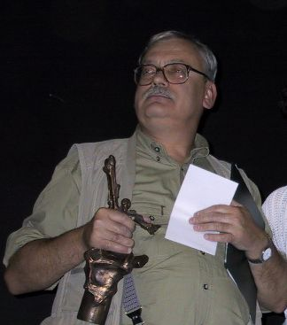

Назва книги:
Відьмак - вежа ластівки
Автор:
Анджей Сапковський
Жанр:
Фантастика
Рік першого видання:
1997р
Моя улюблена книга
Мусіхін Владислав Володимирович
Короткий опис
Дія починається тим, що Висогота, відлюдник, який живе на півді Нільфгардської Імперії знаходить поранену Цірі. Під час реабілітації вона розказує про те хто вона така, а також про усі її пригоди. Цірілла грабувала зі своєю бандою — «Щурами», коли вони довідались, що на них полює відомий і жорстокий мисливець за головами — Лео Бонгарт. Він вбиває всіх «щурів», окрім Цірі, яку змушує дивитися на те, як він відрубує їм голови. Згодом, виявляється, що Бонгарт мав віддати Цірі живою одному барону, та побачивши її здібності, вирішує підзаробити на ній і відправляє битися на спеціальній арені.
(рік народження - 1948р)
Народився 1948 році в місті Лодзь, де й закінчив університет, факультет зовнішньої торгівлі.
З 1972 по 1994 рік працював у торгівлі.
1986 року написав фентезійну новелу «Відьмак» (пол. Wiedźmin),
у якій створив свого головного героя — відьмака Геральта із Рівії,
майстра меча й магії, який за гроші вбиває монстрів і різноманітні міфічні створіння у фентезійному світі.
Перші чотири оповідання про відьмака були видані в збірці «Відьмак».
Про автора
ЗМІСТ
Розділ 1
Розділ 2
Розділ 3
Розділ 4
...